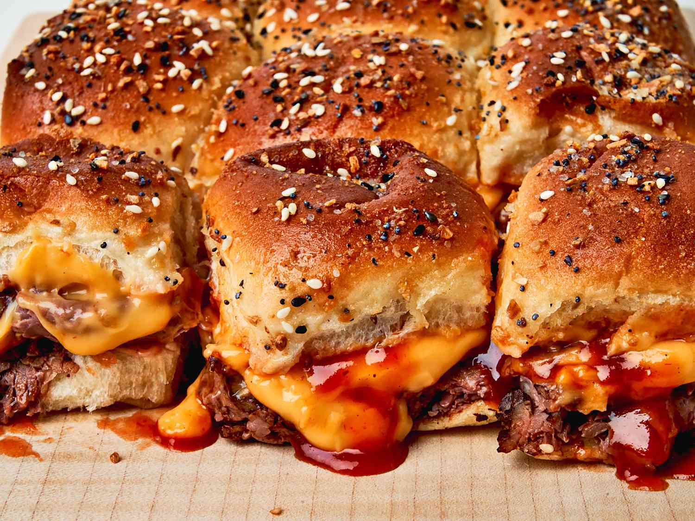

Roast Beef and Cheddar Sliders Recipe

Description
These roast beef and Cheddar sliders are so easy to put together, bake in just a few
minutes, and are just as delicious as the fast-food favorite from your favorite roast beef restaurant. And
you don't have to leave home
Ingredients
- 4 tablespoons butter, melted, divided
- 1 (12 roll) package Hawaiian rolls, split in half horizontally
- 12 ounces deli roast beef
- 1/2 cup thin tangy BBQ sauce, such as Arby’s® Original Sauce
- 1 cup Cheddar cheese sauce
- 1/4 teaspoon garlic powder
- 1/4 teaspoon onion powder
- 2 teaspoons everything bagel seasoning
Directions
- Preheat the oven to 350 degrees F (175 degrees C). Brush the bottom and
sides of
a 9x13-inch baking dish with melted butter until lightly coated.
- Place bottom half of rolls in baking dish and top evenly with roast beef
slices.
Drizzle BBQ sauce evenly over roast beef and dollop cheese sauce evenly over the top. Place top roll
halves on top.
- Stir together remaining butter, garlic powder, and onion powder and brush
evenly
over bun tops. Sprinkle with bagel seasoning.
- Bake in the preheated oven until the center is warm and melted, and bread is
toasted and golden brown, 12 to 14 minutes.